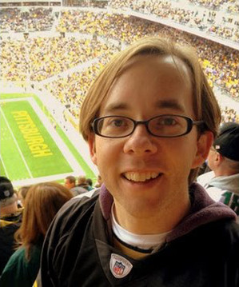
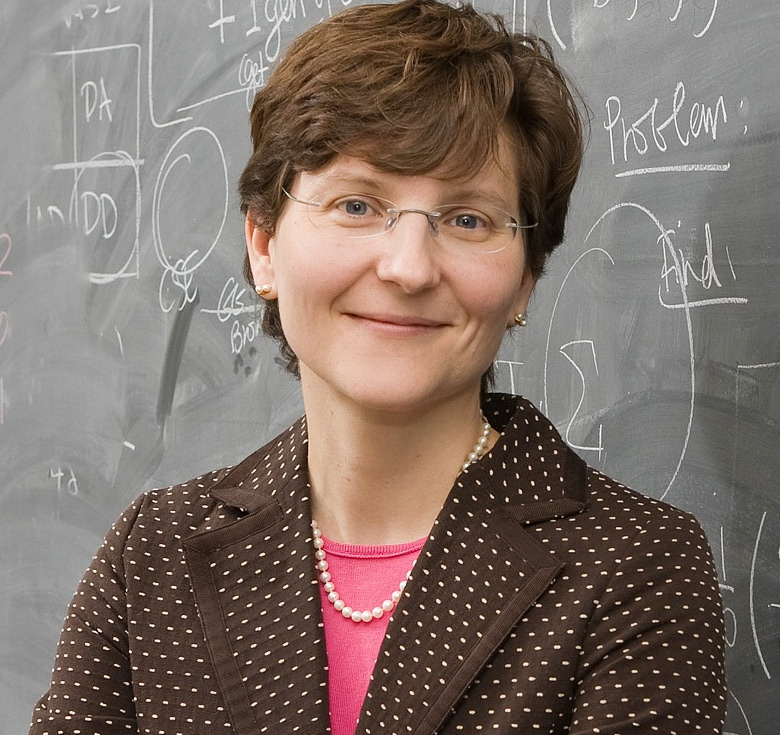
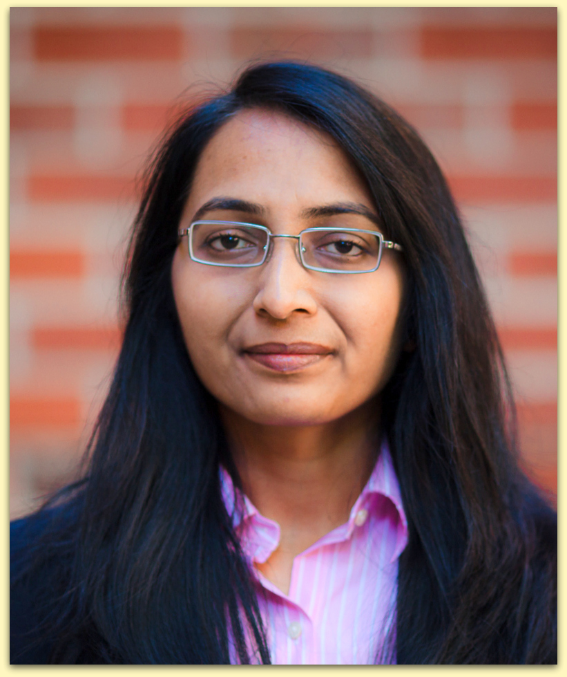
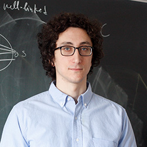
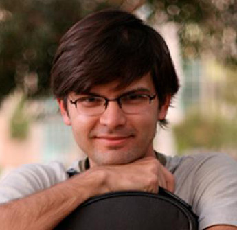
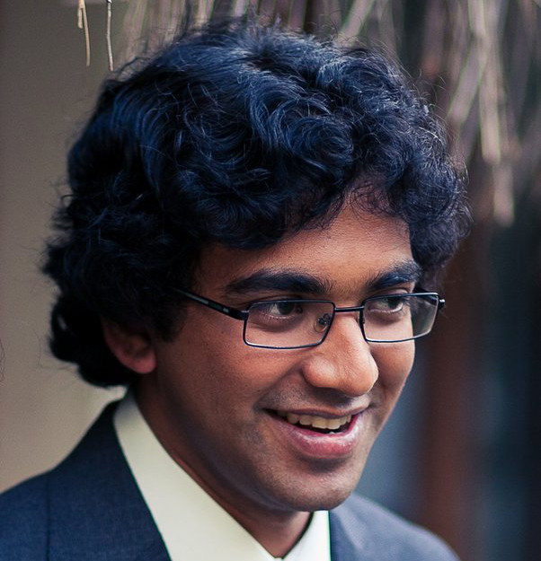

Information
The 67th Midwest Theory Day will bring together researchers in theoretical computer science from the Midwest for a weekend of interaction and collaboration.
|
Schedule
Day 1, April 15
-
10:00 – 11:00
Registration
-
11:00 – 11:10
Opening Remarks
-
11:10 – 12:10
Vahab Mirrokni (Google)
Distributed Optimization via Composable Core-sets: From Submodularity to Feature Selection -
12:10 – 13:30
Lunch Break
-
13:30 – 14:30
Nitin Vaidya (University of Illinois, Urbana-Champaign)
Fault-Tolerance and Privacy for Distributed OptimizationConsider a network of agents 1 to N, wherein each agent i has a local convex cost function Fi(x). The objective here is to identify argument x that minimizes the total cost over all the agents. Similar problems arise in many contexts, including machine. Many distributed algorithms have been developed for this problem to determine the minimum without requiring any single agent to be aware of all the cost functions. In this talk, we consider distributed optimization in the presence of an adversary that may tamper with messages sent during the execution of an algorithm. We also consider mechanisms for privacy-preserving optimization.
Benjamin Moseley (Washington University, St. Louis)
Efficient Massively Parallel Methods for Dynamic ProgrammingModern science and engineering is driven by massively large data sets and its advance heavily relies on massively parallel computing platforms such as Spark, MapReduce, and Hadoop. Theoretical models have been proposed to understand the power and limitations of such platforms. Recent study of developed theoretical models has led to the discovery of new algorithms that are fast and efficient in both theory and practice, thereby beginning to unlock their underlying power. Given recent promising results, the area has turned its focus on discovering widely applicable algorithmic techniques for solving problems efficiently.
In this talk we make progress towards this goal by giving a principled framework for simulating sequential dynamic programs in the distributed setting. In particular, we identify two key properties, monotonicity and decomposibility, which allow us to derive efficient distributed algorithms for problems possessing the properties. We showcase our framework by considering several core dynamic programming applications, Longest Increasing Subsequence, Optimal Binary Search Tree, and Weighted Interval Selection. For these problems, we derive algorithms yielding solutions that are arbitrarily close to the optimum, using O(1) rounds and O(n/m) memory on each machine where n is the input size and m is the number of machines available.
-
14:30 – 15:00
Coffee Break
-
15:00 – 16:00
Anastasios Sidiropoulos (Ohio State University)
Algorithmic Interpretations of Fractal DimensionThe computational complexity of many geometric problems depends on the dimension of the input space. We study algorithmic problems on spaces of low fractal dimension. There are several well-studied notions of fractal dimension for sets and measures in Euclidean space. We consider a definition of fractal dimension for finite metric spaces, which agrees with standard notions used to empirically estimate the fractal dimension of various sets. We obtain faster algorithms on sets of low fractal dimension for a plethora of classical problems, including TSP, Independent Set, R-Cover, and R-Packing. Interestingly, the dependence of the performance of these algorithms on the fractal dimension closely resembles the currently best-known dependence on the standard Euclidean dimension. For example, our algorithm for TSP has running time 2^O(n^(1-1/delta) * log(n)), on sets of fractal dimension delta; in comparison, the best-known algorithm for sets in d-dimensional Euclidean space has running time 2^O(n^(1-1/d)).
Anindya De (Northwestern University)
TBDTBD
-
16:00 – 17:00
Alexandr Andoni (Columbia University)
Near Neighbor Search under General Symmetric DistancesWe show an efficient approximate nearest neighbor search (ANN) algorithm over any arbitrary high dimensional symmetric norm. Traditionally, the ANN problem in high dimensions has been studied over the Manhattan and Euclidean distances, with only a few exceptions. This new result is a (modest) step towards a unified theory of similarity search.
At a very high level, the algorithm proceeds by mapping an arbitrary symmetric norm into a carefully crafted "simpler" space, which we can handle via a combination of classic and new tools. The resulting data structure achieves doubly-logarithmic approximation using sub-polynomial query time and near-linear space.
Joint work with Huy Nguyen, Aleksandar Nikolov, Ilya Razenshteyn, and Erik Waingarten (to appear in STOC'17).
-
17:00 – 18:30
Poster Session
Day 2, April 16
-
09:00 – 10:30
Anna Gilbert (University of Michigan)
Generalization Performance of the Random Fourier Features MethodWe investigate the risk bounds of support vector machines (SVM) that use the random Fourier features method as an approximate model in classification tasks under three different problem setups: (i) in the soft-margin formulation, using the same regularization parameter in the approximate and the accurate models, (ii) using the same upper bound on the 2-norm of the normal vectors, and (iii) choosing freely the 2-norm of the normal vectors in the approximate model. We also provide a series of simulation results using synthetic data to exhibit a large gap in the performance between the accurate and the approximate models that can occur when we fail to control the regularization parameter appropriately.
Our work shows the importance of the effect of the regularization parameters when comparing the generalization performance of random Fourier features method with the accurate model and provides guidance for numerical experimentation, as well as a rigorous interpretation of the intuition that the expected risk of the kernel SVM with random Fourier features method may be no more than $O(1/\sqrt(N))$ compared with the hypothesis learned by the accurate model.
Joint work with Yitong Sun
Ruta Mehta (University of Illinois, Urbana-Champaign)
Nash Social Welfare Approximation for Strategic AgentsThe fair division of resources among strategic agents is an important age-old problem that has led to a rich body of literature. At the center of this literature lies the question of whether there exist mechanisms that can implement fair outcomes, despite the agents' strategic behavior. A fundamental objective function used for measuring fair outcomes is the {\em Nash social welfare} (NSW), mathematically defined as the geometric mean of the agents' values in a given allocation. This objective function is maximized by widely known solution concepts such as Nash bargaining and the competitive equilibrium with equal incomes.
In this work we focus on the question of (approximately) implementing this objective. The starting point of our analysis is the Fisher market, a fundamental model of an economy, whose benchmark is precisely the (weighted) Nash social welfare. We begin by studying two extreme classes of valuations functions, namely perfect substitutes and perfect complements, and find that for perfect substitutes, the Fisher market mechanism has a constant approximation: at most 2 and at least $e^{\frac{1}{e}}$ ($\approx$ 1.44). However, for perfect complements, the Fisher market mechanism does not work well, its bound degrading linearly with the number of players.
Strikingly, the Trading Post mechanism---an indirect market mechanism also known as the Shapley-Shubik game---has significantly better performance than the Fisher market on its own benchmark. Not only does Trading Post achieve an approximation of 2 for perfect substitutes, but this bound holds for any concave utilities and becomes arbitrarily close to optimal for perfect complements, where it reaches $(1+\epsilon)$ for every $\epsilon>0$. Moreover, we show that all the Nash equilibria of the Trading Post mechanism are pure (essentially the approximation factors extend to all Nash equilibria), and satisfy an important notion of individual fairness known as proportionality.
Joint work with Simina Branzei and Vasilis Gkatzelis
Matus Telgarsky (University of Illinois, Urbana-Champaign)
Approximation Properties and Depth Hierarchies for Neural Networks and FriendsThis talk will survey apocryphal results, recent results, and open problems in the representation power of neural networks. Two highlights will be the proof of a depth hierarchy theorem for ReLU networks, and of the ability of rational functions and ReLU networks to approximate each other. Time permitting, representation power of recurrent networks will be discussed.
Joint work with brain cells I lost due to sleep deprivation.
-
10:30 – 11:00
Coffee Break
-
11:00 – 12:30
Yury Makarychev (Toyota Technological Institute, Chicago)
Algorithms for Stable and Perturbation-Resilient ProblemsWe study the notion of stability and perturbation resilience introduced by Bilu and Linial (2010) and Awasthi, Blum, and Sheffet (2012). A combinatorial optimization problem is α-stable or α-perturbation-resilient if the optimal solution does not change when we perturb all parameters of the problem by a factor of at most α. We present improved algorithms for stable instances of various clustering and optimization problems, including k-means, k-median, and Minimum Multiway Cut. We also show several hardness results.
The talk is based on a joint work with Haris Angelidakis and Konstantin Makarychev.
Aravindan Vijayaraghavan (Northwestern University)
The Log-Density Threshold for Approximating Label-CoverMany known optimal NP-hardness of approximation results are reductions from a problem called Label-Cover. It is believed that the best approximation ratio efficiently achievable for Label-Cover is polynomial is the instance size (of the form N^{-c} where N is the size of the instance, and 0
I will then describe a polynomial-time approximation algorithm for ``semi-random'' instances of Label-Cover whose approximation ratio is N^{3-2\sqrt{2}+\epsilon}, for any \epsilon>0. This log-density framework can also be extended to general 2CSPs (with a different threshold), with algorithms that match this threshold for a similar semi-random model as well. If time permits, I will also describe some improved approximations for Label-Cover in the worst-case (that do not match this threshold), and evidence using Sum-of-Squares lower bounds for N^{\Omega(1)} inapproximability.
Based on joint work with Eden Chlamtac, Pasin Manurangsi and Dana Moshkovitz
Karthik Chandrasekaran (University of Illinois, Urbana-Champaign)
Global and Fixed-Terminal Cuts in DigraphsThe computational complexity of multicut-like problems may vary significantly depending on whether the terminals are fixed or not. In this talk, I will highlight this phenomenon in directed graphs. I will describe two variants of multi-cut like problems in directed graphs, namely double cut and bicut. Both problems are generalizations of min cut in undirected graphs to directed graphs.
I will present approximability results for global and fixed-terminal node weighted double cut. Next, I will exhibit a gap in the approximability of global and fixed-terminal edge weighted bicut.
Based on joint work with Kristof Berczi, Tamas Kiraly, Euiwoong Lee and Chao Xu.
-
12:30 – 14:00
Lunch Break
-
14:00 – 15:00
Ryan O'Donnell (Carnegie Mellon University)
Optimal Mean-based Algorithms for Trace ReconstructionThere is an unknown n-bit string x. A "trace" is a random substring of x formed by deleting each bit with probability (say) 1/2. Suppose an algorithm has access to independent traces of x. How many does it need to reconstruct x? The previous best method needed about exp(n^{1/2}) traces. We give a simple "mean-based" algorithm that uses about exp(n^{1/3}) traces (and time). We also show that any algorithm working in the restricted "mean-based" framework requires exp(n^{1/3}) traces. The main tool in our work is elementary complex analysis.
Joint work with Anindya De (Northwestern) and Rocco Servedio (Columbia).
-
15:00 – 15:10
Concluding Remarks
Speakers
External Speakers
-
Alexandr Andoni (Columbia University)
Alexandr Andoni is an Associate Professor at Columbia University. He was previously a Researcher at Microsoft Research Silicon Valley. His research interests include sublinear algorithms, streaming, algorithms for massive data sets, high-dimensional computational geometry, metric embeddings and theoretical machine learning. Andoni graduated from MIT in 2009, under the supervision of Professor Piotr Indyk. His PhD thesis is entitled, "Nearest Neighbor Search: the Old, the New, and the Impossible." From 2009 to 2010, he was a postdoc at the Center for Computational Intractability at Princeton, and a visitor at NYU and IAS.
-

Ryan O'Donnell (Carnegie Mellon University)
Ryan O'Donnell is an Associate Professor at the School of Computer Science at Carnegie Mellon University. His research interests include the following topics: Complexity Theory, Approximation Algorithms, Analysis of Boolean Functions, Learning Theory, Property Testing and Probability. Ryan got his Ph.D. from MIT in 2003 and joined CMU after postdocs at the Institute for Advanced Study and Microsoft Research.
-

Vahab Mirrokni (Google Research, NYC)
Vahab Mirrokni is a Principal Research Scientist, heading the algorithms research group at Google Research, New York. He received his PhD from MIT in 2005 and his B.Sc. from Sharif University of Technology in 1999. He joined Google Research in New York in 2008, after spending a couple of years at Microsoft Research, MIT and Amazon.com. He is the co-winner of a SODA'05 best student paper award and ACM EC'08 best paper award. His research areas include algorithms, algorithmic game theory, combinatorial optimization, and social networks analysis. At Google, he is mainly working on algorithmic and economic problems related to search and online advertising. Recently he is working on online ad allocation problems, distributed algorithms for large-scale graph mining, and mechanism design for advertising exchanges.
Midwest Speakers
-
Karthik Chandrasekaran (University of Illinois, Urbana-Champaign)
Karthik Chandrasekaran is an Assistant Professor at University of Illinois, Urbana-Champaign. He received his Ph.D. in Algorithms, Combinatorics and Optimization (ACO) from Georgia Tech in 2012. He was a Simons postdoctoral fellow in the Theory of Computation research group at Harvard University prior to joining UIUC in 2014. His research interests are in discrete optimization, approximation and randomized algorithms, probabilistic methods and analysis.
-
Anindya De (Northwestern University)
-

Anna Gilbert (University of Michigan)
Anna Gilbert received an S.B. degree from the University of Chicago and a Ph.D. from Princeton University, both in mathematics. In 1997, she was a postdoctoral fellow at Yale University and AT&T Labs-Research. From 1998 to 2004, she was a member of technical staff at AT&T Labs-Research in Florham Park, NJ. Since then she has been with the Department of Mathematics at the University of Michigan, where she is now the Herman H. Goldstine Collegiate Professor. She has received several awards, including a Sloan Research Fellowship (2006), an NSF CAREER award (2006), the National Academy of Sciences Award for Initiatives in Research (2008), the Association of Computing Machinery (ACM) Douglas Engelbart Best Paper award (2008), the EURASIP Signal Processing Best Paper award (2010), a National Academy of Sciences Kavli Fellow (2012), and the SIAM Ralph E. Kleinman Prize (2013). Her research interests include analysis, probability, networking, and algorithms. She is especially interested in randomized algorithms with applications to harmonic analysis, signal and image processing, networking, and massive datasets.
-
Yury Makarychev (Toyota Technological Institute, Chicago)
Yury Makarychev is an associate professor of computer science at TTIC. He received an MS in Mathematics from Moscow State University and a PhD in Computer Science from Princeton University. Yury served as a postdoctoral researcher at Microsoft Research in Redmond, WA, and Cambridge, MA. Upon completion of the postdoc at Microsoft, Yury joined TTIC in 2009. Yury's research interests include combinatorial optimization, approximation algorithms, and metric geometry.
-

Ruta Mehta (University of Illinois, Urbana-Champaign)
Ruta Mehta is an assistant professor in the Department of Computer Science at UIUC. Her research lies at the intersection of theoretical computer science, game theory, and mathematical economics, and their applications to evolution, dynamical systems and learning. She has worked on computability of equilibria, both market and Nash, under various settings, and also on understanding the impact of strategic behavior in multi-agent situations. In addition she has explored learning economic parameters through revealed preferences, genetic evolution under sexual reproduction, and dynamics in social networks. She did Postdoc at Georgia Tech with Prof. Vijay V. Vazirani, and later at Simons Institute, UC Berkeley. Prior to that she did her PhD from Indian Institute of Technology, Bombay. Her thesis won ACM India Doctoral Dissertation Award 2012. In 2014, she was conferred the Best Postdoctoral Research Award by CoC at Georgia Tech.
-
Benjamin Moseley (Washington University, St. Louis)
Benjamin Moseley joined the Department of Computer Science and Engineering at Washington University in St. Louis in July 2014. Previously, Moseley was a Research Assistant Professor at the Toyota Technological Institute at Chicago from 2012 to 2014, has frequently been affiliated with Yahoo Research and was a visiting scientist at Sandia National Laboratories. He received his Ph.D. in computer science from the University of Illinois at Urbana-Champaign (Illinois) in 2012. Moseley received the Best Paper Award at the 2015 International Parallel and Distributed Processing Symposium (IPDPS), the Best Paper Award at the 2013 Symposium on Parallelism in Algorithms and Architectures (SPAA), and the Best Student Paper Award at the 2010 Symposium on Discrete Algorithms (SODA). He co-organizes the bi-annual meeting, "New Challenges in Scheduling Theory'' and is an associate editor of Operations Research Letters.
-

Anastasios Sidiropoulos (Ohio State University)
Anastasios Sidiropoulos is an Assistant Professor at the Computer Science and Engineering and the Mathematics Departments at The Ohio State University. He received his PhD from the Massachusetts Institute of Technology and has been a postdoctoral fellow at the University of Toronto and the University of Illinois at Urbana-Champaign, and a Research Assistant Professor at the Toyota Technological Institute at Chicago. His research focuses on developing algorithms for the analysis of graphs and geometric data sets.
-

Matus Telgarsky (University of Illinois, Urbana-Champaign)
Matus Telgarsky is an assistant professor at UIUC. He received his PhD in 2013 at UCSD under Sanjoy Dasgupta. He works in machine learning theory, and his current interests are non-convex optimization and representation.
-
Nitin Vaidya (University of Illinois, Urbana-Champaign)
Nitin Vaidya received the Ph.D. from the University of Massachusetts at Amherst. He is a Professor of Electrical and Computer Engineering at the University of Illinois at Urbana-Champaign. He has held visiting positions at Argonne National Lab, Technicolor Paris Lab, TU-Berlin, IIT-Bombay, Microsoft Research, and Sun Microsystems, as well as a faculty position at the Texas A&M University. Nitin Vaidya has co-authored papers that received awards at several conferences. He is a fellow of the IEEE. He presently serves the Chair of the Steering Committee for the ACM PODC conference, and has previously served as Editor-in-Chief for the IEEE Transactions on Mobile Computing, and Editor-in-Chief for ACM SIGMOBILE publication MC2R. More information at http://disc.ece.illinois.edu/.
-

Aravindan Vijayaraghavan (Northwestern University)
Aravindan Vijayaraghavan is an Assistant Professor of Computer Science at Northwestern University. After obtaining his PhD in Computer Science from Princeton University in 2012, he was a Simons Postdoctoral Fellow at Carnegie Mellon University. He also spent a year as a postdoc at the Courant Institute, with the Simons Collaboration on Algorithms & Geometry. His research interests are in designing efficient algorithms for problems in Combinatorial Optimization and Machine Learning, and in using paradigms that go Beyond Worst-Case Analysis to obtain good algorithmic guarantees.
Organizers
-

Grigory Yaroslavtsev
Grigory Yaroslavtsev is an assistant professor of Computer Science at Indiana University. Prior to that he was a postdoctoral fellow at the Warren Center for Network and Data Sciences at the University of Pennsylvania. He was previously a Postdoctoral Fellow in Mathematics at Brown University, ICERM. He received his Ph.D. in Theoretical Computer Science in 2014 from Pennsylvania State University and an M.Sc. in Applied Mathematics and Physics from the Academic University of the Russian Academy of Sciences in 2010. Grigory works on efficient algorithms for sparsification, summarization and testing properties of large data, including approximation, parallel and online algorithms, learning theory and property testing, communication and information complexity and private data release.
-

Qin Zhang
Qin Zhang is an assistant professor at the Indiana University, Bloomington. He received a B.S. degree from Fudan University and a Ph.D. from Hong Kong University of Science and Technology. He also spent a couple of years as a post-doc at the Theory Group of IBM Almaden Research Center, and the Center for Massive Data Algorithmics at Aarhus University. He is interested in algorithms for big data, in particular, data stream algorithms, sublinear algorithms, algorithms on distributed data; I/O-efficient algorithms, data structures, database algorithms and communication complexity.
-
Yuan Zhou
Yuan Zhou is an assistant professor of Computer Science at Indiana University. Prior to that he was an instructor in applied mathematics at MIT. Yuan received his Ph.D. from Carnegie Mellon University in 2014. His research interests span theoretical computer science and operations research with emphasis on linear programming and semidefinite programming relaxations, discrete optimization, approximation algorithms and hardness of approximation, harmonic analysis of discrete functions, process flexibility and decision under uncertainty with applications to crowdsourcing.